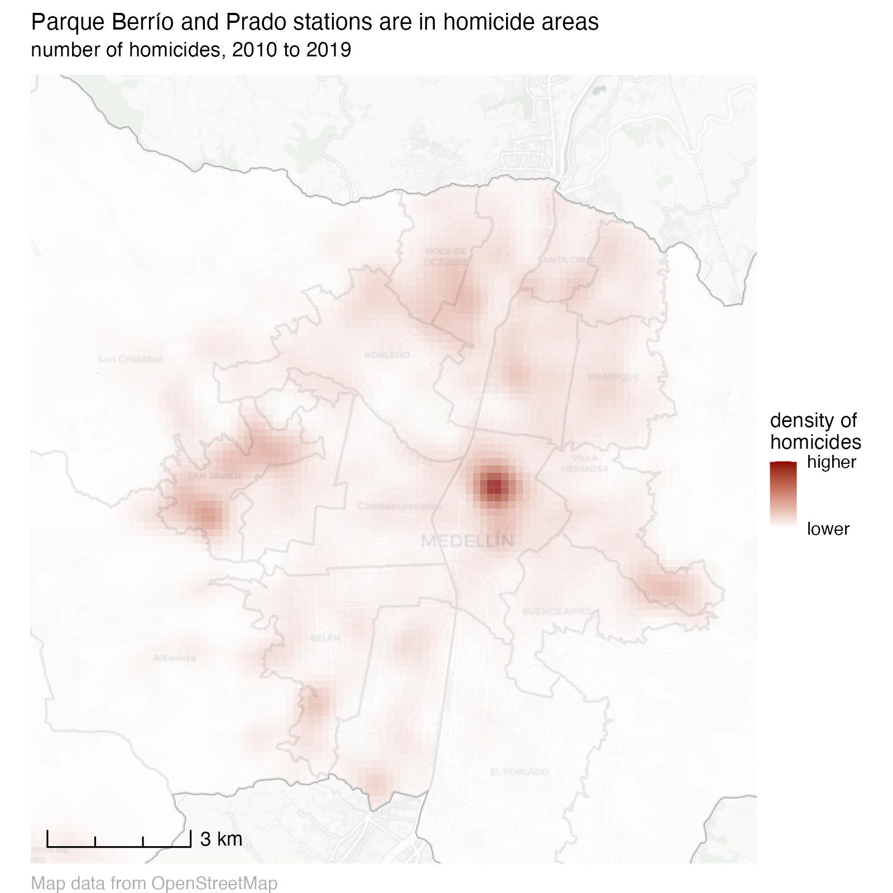
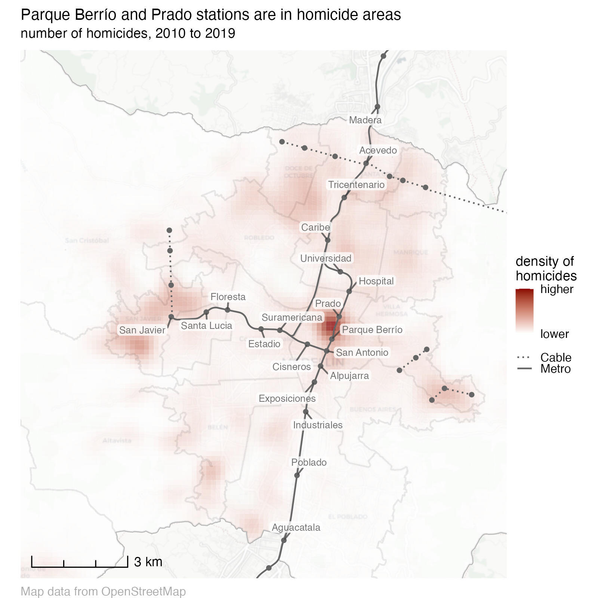
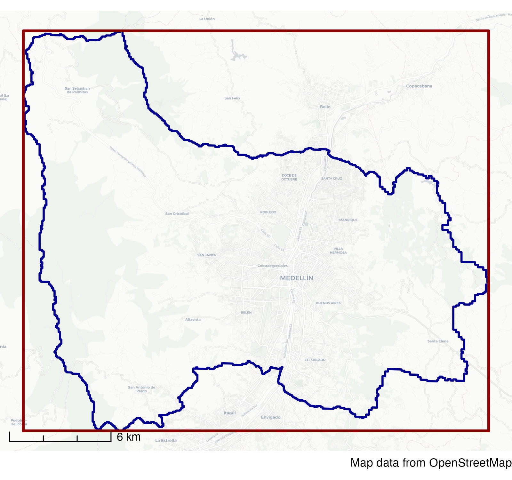
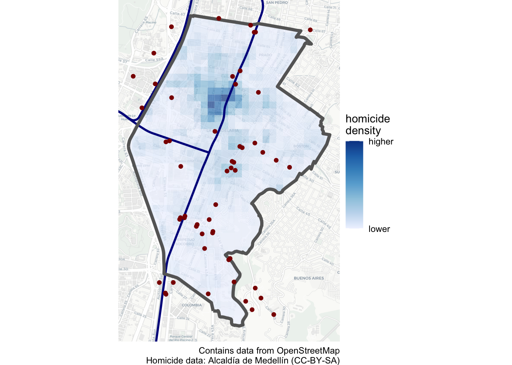

10 Using data about places
Understanding the spatial context of crime is essential for effective crime mapping and analysis. This chapter explores how to make crime maps more informative by incorporating additional data about places. It covers sources of spatial data, including open data repositories and OpenStreetMap, and explains how to use shapefiles to add context to crime patterns.
Open RStudio or – if you already have RStudio open – click Session then Restart R. Make sure you’re working inside the Crime Mapping RStudio project you created in Section 1.5, then you’re ready to start mapping.
10.1 Introduction
The purpose of most crime maps is to help people make decisions, be they professionals working out how best to respond to crime problems or citizens holding local leaders to account. We can make it easier for people to make decisions by putting crime data into a relevant context. We have already started to do this by adding base maps, titles, legends and so on to our maps.
Since crime is concentrated in a few places, readers of our crime maps will often be interested in understanding what features of the environment are related to specific concentrations of crime in particular places. Where patterns of crime are related to particular facilities – such as late-night violence being driven by the presence of bars selling alcohol – it can be useful to highlight specific features on our maps.
As an example, imagine you are the manager responsible for security on the metro network in Medellin, Colombia. There are several mountains within Medellin, so the city metro network consists of both railway lines in the valley and cable cars up the mountains. The security manager for the metro company will certainly analyse violence on the company’s stations and vehicles, but may also be interested in which stations are in neighbourhoods that themselves have high levels of violence.
To help with this, you might produce a map showing the density of homicides recorded by local police.

This is an acceptable crime map: it shows the data in a reasonable way, places the data layer at the top of the visual hierarchy and provides suitable context in the title, legend etc. But it is a much less useful map than it could be because it doesn’t show where the metro stations are and this information is not included in the base map. A much better map would add extra layers of data showing the metro stations and the line connecting them.

From this second map, it is much easier to see that Parque Berrío and Prado stations are closest to an area with relatively high numbers of homicides.
To get started, open RStudio and make sure you are working inside the RStudio project you created in Section 1.5. Now open a new R script file and save it as chapter10.R. Add a note to the top of this file explaining that the code will create a map of homicides in Medellin, Colombia, then add the code needed to load the packages we will use in this chapter:
Run this line of code to load the packages. You will note that as well as the packages we have used in previous chapters, this code loads a new package – osmdata – that we will learn about in this chapter. If you want to remind yourself about the packages we have already used, see Chapter 3 for the tidyverse package, Chapter 5 for sf, and Chapter 6 for ggspatial and sfhotspot.
Data on the locations of homicides in Medellin from 2010 to 2019 is available at https://mpjashby.github.io/crimemappingdata/medellin_homicides.csv. In previous chapters, we have used the read_csv() function from the readr package to load data from CSV files. The read_csv() function assumes that (as the name ‘comma-separated values’ suggests) the columns in a CSV file are separated by commas (,). But not all countries use commas as the column separator in CSV files: some countries use semi-colons (;) instead. This is usually because those countries also use commas instead of periods as the decimal separator inside numbers (so that the number three-point-one-four is written 3,14 instead of 3.14 as in English). If commas are used as decimal separators in numbers in a file, commas cannot also be used to separate columns from one another – otherwise there would be no way to know if a comma represented the decimal mark in a number or the boundary between two columns.
If we try to load a CSV file that uses semi-colon separators using the read_csv() function, all the data on each row will be loaded as a single column. Run this code in the R Console to see this for yourself:
Warning: One or more parsing issues, call `problems()` on your data frame for details,
e.g.:
dat <- vroom(...)
problems(dat)Rows: 9360 Columns: 1
── Column specification ────────────────────────────────────────────────────────
Delimiter: ","
chr (1): fecha_hecho;longitud;latitud;sexo;edad;modalidad
ℹ Use `spec()` to retrieve the full column specification for this data.
ℹ Specify the column types or set `show_col_types = FALSE` to quiet this message.# A tibble: 9,360 × 1
`fecha_hecho;longitud;latitud;sexo;edad;modalidad`
<chr>
1 2019-04-23T12:30:00Z;-75,56985400000;6,25722555000;Mujer;50;Ahorcamiento o e…
2 2019-05-12T00:51:00Z;-75,61036800000;6,22280611000;Hombre;24;Arma de fuego
3 2019-05-12T02:36:00Z;-75,62039100000;6,26238217000;Hombre;34;Arma de fuego
4 2019-05-12T03:03:00Z;-75,56176640000;6,26958878000;Hombre;20;Arma de fuego
5 2019-05-12T22:40:00Z;-75,53268500000;6,23627692000;Hombre;34;Arma de fuego
6 2019-05-12T19:30:00Z;-75,64195830000;6,19619536500;Hombre;25;Arma de fuego
7 2019-05-12T04:00:00Z;-75,55531860000;6,29015449800;Hombre;37;Cortopunzante
8 2019-05-13T05:34:00Z;-75,55719600000;6,27162258000;Hombre;22;Arma de fuego
9 2019-05-12T04:50:00Z;-75,56665500000;6,24002322000;Mujer;21;Ahorcamiento o e…
10 2019-05-14T01:00:00Z;-75,56219630000;6,24926189200;Hombre;29;Arma de fuego
# ℹ 9,350 more rowsThis is obviously not what we want, so we need to use a different function to load this data. Fortunately, the readr package has another function that can handle CSV files created using the conventions of countries that use semi colons to separate columns: read_csv2().
How should you know when to use read_csv2() rather than read_csv()? If you don’t know whether a file uses commas or semi colons to separate columns, the easiest thing is probably to use read_csv() first. Now load the file and use head() to look at the first few rows: if you see all the data has appeared in a single column that contains several semi colons, then you’ll know to change your code to use read_csv2() instead.
For this dataset, if you load it with read_csv2() you should find that the structure of the data is more as you’d expect it to be.
chapter10.R
# LOAD DATA --------------------------------------------------------------------
## Load Medellin homicide data ----
# Note: this dataset uses ';' as the column separator
medellin_homicides <- read_csv2("https://mpjashby.github.io/crimemappingdata/medellin_homicides.csv") |>
# Remove rows with missing co-ordinates
1 drop_na(longitud, latitud) |>
# Convert the data to an SF object
2 st_as_sf(coords = c("longitud", "latitud"), crs = "EPSG:4326")- 1
-
Some rows in this dataset have missing co-ordinates.
st_as_sf()will produce an error if there are missing co-ordinates, so we usedrop_na()to remove them first. - 2
-
Since the column names are called
longitudandlatitud, we know that we should use the WGS84 co-ordinate reference system, which has the CRS code EPSG:4326.
ℹ Using "','" as decimal and "'.'" as grouping mark. Use `read_delim()` for more control.Rows: 9360 Columns: 6
── Column specification ────────────────────────────────────────────────────────
Delimiter: ";"
chr (2): sexo, modalidad
dbl (3): longitud, latitud, edad
dttm (1): fecha_hecho
ℹ Use `spec()` to retrieve the full column specification for this data.
ℹ Specify the column types or set `show_col_types = FALSE` to quiet this message.In the rest of this chapter we will use data from different sources to better understand clusters of homicides in the La Candelaria neighbourhood of downtown Medellin.
Which function should you use to load a CSV file of crime locations that uses semi-colons to separate the columns?
10.2 Finding data
If you are producing crime maps on behalf of a particular organisation such as a police agency or a body responsible for managing a place, it is likely that they will hold spatial data that is relevant to the local area. For example, many city governments will hold records of local businesses. It will sometimes be necessary to track down which department or individual holds this data, and it may also be necessary to convert data into formats that are useful for spatial analysis.
Some organisations may also have agreements to share data with others. For example, both universities and public agencies such as police forces in the United Kingdom have agreements with the national mapping agency Ordnance Survey to share a wide variety of spatial data. If you are producing maps on behalf of an organisation, it will often be useful to ask what data they hold that might be relevant, or ask for a specific dataset you think would help improve a map.
10.2.1 Open data
Open data is data that is released by organisations or individuals that can be freely used by others. Organisations such as local governments increasingly release data about their areas as open data – almost all of the data we have seen so far in this book is open data released by different local and national governments.
Open data is extremely useful because you can skip the often lengthy and painful process of getting access to data and wrangling it into a format you can use. This means you can move on much more quickly to analysing data, reaching conclusions and making decisions. Watch this video to find out more about the value of open data.
Open data is published in a wide variety of formats and distributed in different ways. Some data might only be distributed by an organisation sending you a DVD or memory stick. Most of the time, however, data will be released online.
Many cities (especially but not only in developed countries) now maintain open-data websites that act as a repository for all their open data. For example, the City of Bristol in England publishes the Open Data Bristol website. Anyone can use this website to download data on everything from population estimates to politicians’ expenses. Many of these datasets can be useful for crime mapping. For example, you can download the locations of CCTV cameras (useful in criminal investigations), or the locations of childrens centres (helpful if a crime-prevention strategy includes visits to such facilities).
Different local governments may use different terms for the same types of information, so it sometimes takes some trial and error to find if a particular dataset is available. Some data might also be held by organisations other than the main local government agency for a particular place. For example, data on the locations of electricity substations (useful if you are trying to prevent metal thefts from infrastructure networks) might be held by a power company. All this means that tracking down a particular dataset might require some detective work.
To try to make this process easier, some countries have established national open-data portals such as Open Data in Canada, Open Government Data Platform India, data.gov.uk in the United Kingdom and data.gov in the United States. There are also international repositories such as the African Development Bank Data Portal, openAfrica and Data Portals, which seeks to list all the open data portals run by different governments and other organisations.
10.2.2 Citing data
Organisations that provide data often do so on condition that users of the data follow certain rules. For example, you can use data on the Open Data Bristol website as long as you follow the conditions of the Open Government Licence. The most-common requirement of an open-data licence is that anyone using the data acknowledges the data source in any maps, reports or other outputs they produce. In the case of the Open Government Licence, users of the data are required to add a declaration to any outputs declaring:
Contains public sector information licensed under the Open Government Licence v3.0.
Complying with open-data licences is a legal requirement, so it is important to make sure you understand what obligations you are accepting when you use a particular dataset. You can typically find the conditions for using a dataset on the website that you download the data from. If you are required to add an attribution statement to your maps, a good place to do this is by adding it to any other information you place in the caption argument of the labs() function in a ggplot() stack.
Which one of these statements about open data is true?
10.3 Shapefiles
In this course we have used spatial data provided in different formats including geopackages (.gpkg) and geoJSON (.geojson) files, as well as creating spatial objects from tabular data in formats like CSV and Excel files. But there is one spatial-data format that we haven’t yet learned to use: the shapefile.
The shapefile format was created by Esri, the company that makes the ArcGIS suite of mapping software. It was perhaps the first spatial format that could be read by a wide variety of mapping software, which meant that lots of providers of spatial data began to provide data in shapefile format. Shapefiles are limited in various ways that mean they are unlikely to be a good choice for storing your own data, but it is important to know how to use them because many spatial datasets are still provided as shapefiles for historical reasons.
One of the complications of using shapefiles (and why they’re not a good choice for storing your own data) is that different parts of the data are stored in separate files. So while the co-ordinates of the points, line or polygons are stored in a file with a .shp extension, the non-spatial attributes of each spatial feature (such as the date on which a crime occurred or the name of a neighbourhood) are stored in a separate file with a .dbf extension and details of the co-ordinate reference system are stored in a .prj file – a single dataset might be held in up to 16 separate files on a computer. All the files that make up a shapefile have the same file name, differing only in the file extension (e.g. .shp, .dbf, etc.). For example, if a .shp file is called robberies.shp then it will be accompanied by a file called robberies.dbf and one called robberies.prj, as well as a robberies.shx index file and possibly several others. All these separate files make it more-complicated to manage shapefiles than other spatial file formats such as the geopackage.
Because storing spatial data in a shapefile requires multiple different files, shapefile data is usually distributed in a .zip file that contains all the component files. This means that to access a shapefile will have to add a step to our usual routine for downloading and opening a data file. To minimise the hassle associated with using shapefiles, in general we will:
- download the
.zipfile if we don’t have a local copy already, - create a temporary directory where we can store the unzipped shapefile, so we can save space on our computers by only permanently keeping the (often much smaller)
.zipfile, - unzip the
.zipfile into the temporary directory, - load the shapefile data from the temporary directory.
For example, the routes of metro lines in Medellin are available in shapefile format at:
https://mpjashby.github.io/crimemappingdata/medellin_metro_lines.zipTo load the data from this file, we can use the process outlined above. Add this code to your chapter10.R script file. Read through the notes below this code to understand what each part of the code does.
chapter10.R
## Load metro lines ----
# Download zip file
1metro_lines_file <- tempfile(fileext = ".zip")
2download.file(
url = "https://mpjashby.github.io/crimemappingdata/medellin_metro_lines.zip",
destfile = metro_lines_file
)
# Set the name for a temporary directory
3metro_lines_dir <- str_glue("{tempdir()}/metro_lines")
# Unzip file
4unzip(metro_lines_file, exdir = metro_lines_dir)
# Load the data
5metro_lines <- read_sf(str_glue("{metro_lines_dir}/medellin_metro_lines.shp"))- 1
- Create a temporary zip file that we can download the zipped data to.
- 2
- Download the zipped data to the temporary file.
- 3
-
The
tempdir()function returns a location on your computer that is used for storing temporary files. Any files stored in this temporary directory will be deleted when you restart your computer, so it’s a useful place to put files that you will only need for a short time so they won’t clutter up your computer. Since we want to store the shapefile in a sub-directory of the temporary directory, we will usestr_glue()to add a relevant sub-directory name to the end of the temporary directory name –unzip()will then create this directory in the background at Step 4. - 4
- Unzip the zipped data to the temporary directory we have just created.
- 5
- Load the correct file (see below) from the temporary directory into an R object.
Note that although a shapefile consists of several different files, we only need to load the file with the extension .shp – the read_sf() function will find all the data it needs from the other files.
Once we have loaded a shapefile into R using read_sf(), we can treat it in the same way as any other spatial dataset – it is only loading shapefiles that is different from other spatial data formats.
One question you might have when reading the code above is how did we know that the shapefile we wanted to load was called medellin_metro_lines.shp? To find out the name of the file we want to load, we need a bit of temporary code (if you want to remind yourself about the difference between permanent and temporary code, look back at Section 2.2).
We can find out the name of files within a zip file using the unzip() function together with the argument list = TRUE. This produces a list of files that are inside the zip file, rather than actually unzipping any files. For example, run this code in the R Console to see a list of files in the zip file we downloaded.
Name Length Date
1 medellin_metro_lines.dbf 2299 2023-02-06 22:46:00
2 medellin_metro_lines.prj 145 2023-02-06 22:46:00
3 medellin_metro_lines.shp 16076 2023-02-06 22:46:00
4 medellin_metro_lines.shx 172 2023-02-06 22:46:00From this, you can see that the file with the file extension .shp (which is what we need to load) is called medellin_metro_lines.shp. We can convert that file name into the correct file path using str_glue() and the metro_lines_dir object we have already created, which is why the final line of the code above loads the file using the code str_glue("{metro_lines_dir}/medellin_metro_lines.shp").
What is a shapefile?
Why do shapefiles often come in .zip format?
Once a shapefile is downloaded and unzipped, which function is used to read it?
10.4 Data from OpenStreetMap
Often we can get map data from the organisation we are working for, or from open-data portals run by governments or international organisations. But sometimes they won’t hold the information we need.
Fortunately, there is another source of data: OpenStreetMap (OSM). This is a global resource of map data created by volunteers (and started at UCL), using a mixture of open data from governments, data contributed by charities and data collected by the volunteers themselves. Watch this video to learn a bit more about OpenStreetMap.
We have already used OSM data in this course: all of the base maps we have used when we create maps with ggplot() are based on data from OpenStreetMap. But we have very little control over which information is and is not included in base maps. Sometimes we need more control over the data, and that means downloading data direct from OSM.
We can download OSM data into R using the osmdata package. This package allows us to choose particular features from the billions of features worldwide that are included in the OSM database. To choose features, we must:
- specify the area we want to download data for using the
opq()function, - specify what type of features we want to download using the
add_osm_feature()function, - download the data using the
osmdata_sf()function, and - extract the type of spatial object (points, lines or polygons) that we are interested in.
Imagine that in your analysis of homicides in Medellin, you have been asked to consider the question of whether homicides are clustered near to bus stops. To answer this question, we need to know the locations of bus stops in the area we are interested in. This information is not published as open data by the Medellin city authorities. Fortunately we can extract bus-stop locations from OpenStreetMap using the osmdata package.
To do this, we first need to calculate the bounding box of the La Candelaria neighbourhood that we are interested in. A bounding box is the smallest rectangle that a particular spatial shape will fit inside. For example, the red rectangle on this map shows the bounding box of the city of Medellin (shown in blue).

You can calculate the bounding box of an SF object using the st_bbox() function from the sf package. In this case we want the bounding box of the La Candelaria neighbourhood, so we will need to load a dataset that includes the boundary of that neighbourhood. Add this code to the chapter10.R script file and run it.
We can now calculate the bounding box of the neighbourhood we are interested in. Add this code to the chapter10.R script file and run it.
All the functions in the osmdata package expect co-ordinates (such as the corners of a bounding box) to be provided as longitudes and latitudes. If you provide data using any other co-ordinate reference system you will see an error saying:
Error in `httr2::req_perform()`:
! HTTP 400 Bad Request.If your data is in a projected co-ordinate system, make sure you use st_transform() to transform the data to use the WGS84 system, EPSG:4326.
The bounding box is the first thing we need to know in order to get data from OpenStreetMap. The second thing we need to know is what search terms to use in the add_osm_feature() function to return the locations of bus stops. OpenStreetMap has hundreds of feature categories, all in the format key=value. Sometimes we will only need to search for a particular key (category of feature), such as the highway key that contains all the features that show roads (from motorways to winding lanes leading to farms in the countryside), tracks and paths. In other cases, we will want to search for a particular value (type of feature within a category), such as searching for the value natural=water to search for lakes, rivers, etc.
The best place to find out how a feature you are interested in is recorded in the OSM database is to look at the OpenStreetMap Wiki. Bus stops are recorded in OSM using the tag highway=bus_stop.
Now that we know the bounding box of the area we are interested in and the tag for the type of feature we want, we can download the data from OpenStreetMap.
The bus_stops object returned by osmdata_sf() is a list of objects. If you type the name of the object in the R Console and press Return you will see a summary of the contents of the bus_stops object:
Object of class 'osmdata' with:
$bbox : 6.22450932830104,-75.5802925457919,6.26512401936258,-75.5538503495463
$overpass_call : The call submitted to the overpass API
$meta : metadata including timestamp and version numbers
$osm_points : 'sf' Simple Features Collection with 55 points
$osm_lines : NULL
$osm_polygons : 'sf' Simple Features Collection with 0 polygons
$osm_multilines : NULL
$osm_multipolygons : NULLYou can see that the object bus_stops has quite complicated structure, but that nested within it is an object called osm_points that is an SF object with 55 rows and another SF object called osm_polygons. Even within a particular type of feature, some places might be represented as points (e.g. a point placed at a bus stop) while others are represented as polygons (e.g. the outline of a bus station).
We can use the pluck() function from the purrr package (part of the tidyverse) to extract the parts of the bus_stops object that we want. To see the first few rows of the SF object osm_points, we can run this code in the R Console:
Rows: 55
Columns: 21
$ osm_id <chr> "847830985", "1561073855", "2418112357", "3135948…
$ name <chr> "Las estatuas", "La Alpujarra", NA, "Barrio Colom…
$ access <chr> NA, NA, NA, NA, NA, NA, NA, NA, NA, NA, NA, NA, N…
$ bench <chr> "no", NA, NA, NA, "no", "no", "no", "no", "yes", …
$ bin <chr> "yes", NA, NA, NA, NA, NA, NA, NA, "no", NA, NA, …
$ bus <chr> "yes", NA, NA, "yes", NA, NA, NA, NA, NA, NA, "ye…
$ `check_date:shelter` <chr> NA, NA, NA, NA, NA, NA, NA, NA, NA, NA, NA, NA, N…
$ covered <chr> NA, NA, NA, NA, "no", "no", "no", "no", "no", "no…
$ highway <chr> "bus_stop", "bus_stop", "bus_stop", "bus_stop", "…
$ lit <chr> NA, NA, NA, NA, NA, NA, NA, NA, NA, NA, NA, NA, N…
$ local_ref <chr> NA, "La Alpujarra", NA, NA, NA, NA, NA, NA, NA, N…
$ `name:en` <chr> NA, NA, NA, NA, NA, NA, NA, NA, NA, NA, NA, NA, N…
$ network <chr> NA, NA, NA, "Metroplus", NA, NA, NA, NA, NA, NA, …
$ note <chr> NA, NA, NA, "Sentido Norte Sur", NA, NA, NA, NA, …
$ operator <chr> NA, NA, NA, "Metro de Medellín", "Metro de Medell…
$ public_transport <chr> "platform", NA, NA, "platform", NA, NA, NA, NA, N…
$ shelter <chr> "yes", NA, NA, "yes", "no", "no", "no", "no", "no…
$ source <chr> NA, NA, NA, NA, NA, NA, NA, NA, NA, NA, NA, NA, N…
$ tactile_paving <chr> "no", NA, NA, NA, NA, NA, NA, NA, NA, NA, NA, NA,…
$ wheelchair <chr> NA, NA, NA, "yes", NA, NA, NA, NA, NA, NA, NA, NA…
$ geometry <POINT [°]> POINT (-75.57696 6.260205), POINT (-75.5734…We can see from this that osmdata_sf() has returned a number of different data fields for each bus stop in the area we are interested in. Most of the fields are blank, but there is a name column and a geometry column that we can use to plot the locations of the bus stops.
Now that we have the locations bus stops in La Candelaria, let’s map them and compare them to the locations of homicides. To do that, we can create a kernel density layer of homicides, as we learned to do in Chapter 6. One detail you might remember from that chapter is that the hotspot_kde() function does not work with data that use co-ordinates specified as longitude and latitude (i.e. data the uses the WGS84/EPSG:4326 co-ordinate system). At the moment the medellin_homicides dataset does use lon/lat pairs, so we will first need to transform the data to an alternative co-ordinate reference system.
When you have needed to transform data in previous chapters, the text has told you which co-ordinate system to use. But there will be many cases where you have been provided with a dataset but have not been given any advice on which co-ordinate system to use. Fortunately, there is an R package called crsuggest that can help with this. Run this code in the R Console to see which co-ordinate systems you can use for the medellin_homicides dataset.
# A tibble: 10 × 6
crs_code crs_name crs_type crs_gcs crs_units crs_proj4
<chr> <chr> <chr> <dbl> <chr> <chr>
1 3115 MAGNA-SIRGAS / Colombia West z… project… 4686 m +proj=tm…
2 21896 Bogota 1975 / Colombia West zo… project… 4218 m +proj=tm…
3 29168 SAD69 / UTM zone 18N project… 4618 m +proj=ut…
4 21897 Bogota 1975 / Colombia Bogota … project… 4218 m +proj=tm…
5 31987 SIRGAS 1995 / UTM zone 18N project… 4170 m +proj=ut…
6 31972 SIRGAS 2000 / UTM zone 18N project… 4674 m +proj=ut…
7 32618 WGS 84 / UTM zone 18N project… 4326 m +proj=ut…
8 32418 WGS 72BE / UTM zone 18N project… 4324 m +proj=ut…
9 32218 WGS 72 / UTM zone 18N project… 4322 m +proj=ut…
10 3832 WGS 84 / PDC Mercator project… 4326 m +proj=me…suggest_crs() produces a table showing one or more co-ordinate reference systems (CRS) that would be suitable for the medellin_homicides dataset. In general, it is best to use the CRS in the first row of the table produced by suggest_crs(), as long as that CRS uses metres as its unit of measurement. In this case, we can see from the crs_units column that all the options use metres (rather than feet, or some other unit), so we can just use the CRS in the first row: the MAGNA-SIRGAS / Colombia West zone CRS, which has the code EPSG:3115. We will transform the homicides data and the neighbourhood boundary to use this CRS, since this will allow both st_intersection() and hotspot_kde() to work.
Add this code to the chapter10.R file and run it.
chapter10.R
## WRANGLE DATA ----------------------------------------------------------------
# Create neighbourhood boundary
la_candelaria <- medellin_comunas |>
filter(nombre == "LA CANDELARIA") |>
# Transform the data to a local co-ordinate reference system
st_transform("EPSG:3115")
# Estimate homicide density
homicide_density <- medellin_homicides |>
# This data needs to use the same CRS as `la_candelaria` for
# `st_intersection()` to work
st_transform("EPSG:3115") |>
# Extract only those homicides occurring within the La Candelaria
# neighbourhood (otherwise `hotspot_kde()` will be very slow)
st_intersection(la_candelaria) |>
# Estimate density of homicides
hotspot_kde(
grid = hotspot_grid(la_candelaria, cell_size = 100),
bandwidth_adjust = 0.33,
quiet = TRUE
) |>
# Clip the result to the neighbourhood boundary
st_intersection(la_candelaria)Warning: attribute variables are assumed to be spatially constant throughout
all geometries
Warning: attribute variables are assumed to be spatially constant throughout
all geometriesWe now have everything we need to map homicides in La Candelaria in relation to bus stops. Let’s add to our script file the code needed to create a density map.
chapter10.R
# PLOT MAP ---------------------------------------------------------------------
ggplot() +
# Add base map
annotation_map_tile(type = "cartolight", zoomin = 0, progress = "none") +
# Add density layer
geom_sf(aes(fill = kde), data = homicide_density, alpha = 0.7, colour = NA) +
# Add metro lines without expanding the map area
annotation_spatial(data = metro_lines, colour = "darkblue", linewidth = 1) +
# Add neighbourhood boundary
geom_sf(data = la_candelaria, colour = "grey40", fill = NA, linewidth = 1.5) +
# Add bus stop locations
geom_sf(data = pluck(bus_stops, "osm_points"), colour = "darkred") +
# Control appearance of density layer
scale_fill_distiller(
direction = 1,
breaks = range(pull(homicide_density, "kde")),
labels = c("lower", "higher")
) +
# Add plot labels
labs(
caption = str_glue(
"Contains data from OpenStreetMap\n",
"Homicide data: Alcaldía de Medellín (CC-BY-SA)"
),
fill = "homicide\ndensity"
) +
theme_void()
Most of this code should be familiar to you from previous chapters – if you would like to refresh your memory on the code needed to produce a kernel density map, look back to Chapter 6. One line of this code that might not be familiar is the annotation_spatial() function (from the ggspatial package). Like geom_sf(), annotation_spatial() adds an SF object to a ggplot() map stack. However, when you use geom_sf() to add an SF object, the area shown on the map automatically expands so that it covers all the data in the SF object. In this case, we don’t want the map to expand to show the whole area covered by the metro_lines object, since we are only interested in one neighbourhood. In those circumstances we can use annotation_spatial() to add the metro_lines data to the map without changing the map extent.
From this map, it looks like homicides do not cluster particularly around bus stops. This would probably be welcome information for the city’s public transport managers.
Just as with other sources of map data, you are legally required to cite data from OpenStreetMap if you use it. The code in the exercise above, for example, cites data from two sources:
- “Contains data from OpenStreetMap” acknowledges that both the base map and the bus-stop locations were obtained from OpenStreetMap.
- “Homicide data: Alcaldía de Medellín (CC-BY-SA)” acknowledges that the Medellin homicide data were released by the Mayor of Medellin under the Creative Commons Attribution Share-alike (CC-BY-SA) licence.
What type of data can be obtained from OpenStreetMap?
Which R package is used to retrieve data from OpenStreetMap?
What does the opq() function do in the osmdata package?
10.5 In summary
In this chapter we have learned how to find open data, including data from OpenStreetMap, and add it to our maps to help readers better understand crime patterns. We will be able to use these skills to add data to future maps that we make so that readers can gain more insight into crime patterns or other phenomena that we might be analysing.
Here is the complete script needed to map homicides and bus stops in La Candelaria:
chapter10.R
# This script produces a map of the density of homicides in the La Candelaria
# area of Medellin, Colombia, together with the locations of local bus stops
# Load packages
pacman::p_load(ggspatial, osmdata, sf, sfhotspot, tidyverse)
# LOAD DATA --------------------------------------------------------------------
## Load Medellin homicide data ----
# Note: this dataset uses ';' as the column separator
medellin_homicides <- read_csv2("https://mpjashby.github.io/crimemappingdata/medellin_homicides.csv") |>
# Remove rows with missing co-ordinates
drop_na(longitud, latitud) |>
# Convert the data to an SF object
st_as_sf(coords = c("longitud", "latitud"), crs = "EPSG:4326")
## Load neighbourhood boundary ----
medellin_comunas <- read_sf("https://mpjashby.github.io/crimemappingdata/medellin_comunas.gpkg") |>
janitor::clean_names()
## Load metro lines ----
# Download zip file
metro_lines_file <- tempfile(fileext = ".zip")
download.file(
url = "https://mpjashby.github.io/crimemappingdata/medellin_metro_lines.zip",
destfile = metro_lines_file
)
# Set the name for a temporary directory
metro_lines_dir <- str_glue("{tempdir()}/metro_lines")
# Unzip file
unzip(metro_lines_file, exdir = metro_lines_dir)
# Load the data
metro_lines <- read_sf(str_glue("{metro_lines_dir}/medellin_metro_lines.shp"))
# GET OSM DATA -----------------------------------------------------------------
# Calculate neighbourhood bounding box
la_candelaria_bbox <- medellin_comunas |>
filter(nombre == "LA CANDELARIA") |>
st_bbox()
# Define the bounding box of the area we want to search
bus_stops <- opq(la_candelaria_bbox) |>
# Define the features we want
add_osm_feature(key = "highway", value = "bus_stop") |>
# Download those features for that area
osmdata_sf()
## WRANGLE DATA ----------------------------------------------------------------
# Create neighbourhood boundary
la_candelaria <- medellin_comunas |>
filter(nombre == "LA CANDELARIA") |>
# Transform the data to a local co-ordinate reference system
st_transform("EPSG:3115")
# Estimate homicide density
homicide_density <- medellin_homicides |>
# This data needs to use the same CRS as `la_candelaria` for
# `st_intersection()` to work
st_transform("EPSG:3115") |>
# Extract only those homicides occurring within the La Candelaria
# neighbourhood (otherwise `hotspot_kde()` will be very slow)
st_intersection(la_candelaria) |>
# Estimate density of homicides
hotspot_kde(
grid = hotspot_grid(la_candelaria, cell_size = 100),
bandwidth_adjust = 0.33,
quiet = TRUE
) |>
# Clip the result to the neighbourhood boundary
st_intersection(la_candelaria)
# PLOT MAP ---------------------------------------------------------------------
ggplot() +
# Add base map
annotation_map_tile(type = "cartolight", zoomin = 0, progress = "none") +
# Add density layer
geom_sf(aes(fill = kde), data = homicide_density, alpha = 0.7, colour = NA) +
# Add metro lines without expanding the map area
annotation_spatial(data = metro_lines, colour = "darkblue", linewidth = 1) +
# Add neighbourhood boundary
geom_sf(data = la_candelaria, colour = "grey40", fill = NA, linewidth = 1.5) +
# Add bus stop locations
geom_sf(data = pluck(bus_stops, "osm_points"), colour = "darkred") +
# Control appearance of density layer
scale_fill_distiller(
direction = 1,
breaks = range(pull(homicide_density, "kde")),
labels = c("lower", "higher")
) +
# Add plot labels
labs(
caption = str_glue(
"Contains data from OpenStreetMap\n",
"Homicide data: Alcaldía de Medellín (CC-BY-SA)"
),
fill = "homicide\ndensity"
) +
theme_void()To find out more about the skills we have worked on in this chapter, you may want to read:
Answer these questions to check you have understood the main points covered in this chapter. Write between 50 and 100 words to answer each question.
- Why is it important to incorporate additional spatial data when creating crime maps?
- What are the key differences between open data and proprietary data sources?
- What are shapefiles, and what challenges do they present when working with spatial data?
- How does OpenStreetMap (OSM) work as a data source, and what steps are involved in retrieving spatial data from OSM using R?
- Why is it necessary to check the terms of use and provide attribution when using open data sources?
The OpenStreetMap logo is a trademark of the OpenStreetMap Foundation, and is used with their permission. This chapter not endorsed by or affiliated with the OpenStreetMap Foundation.